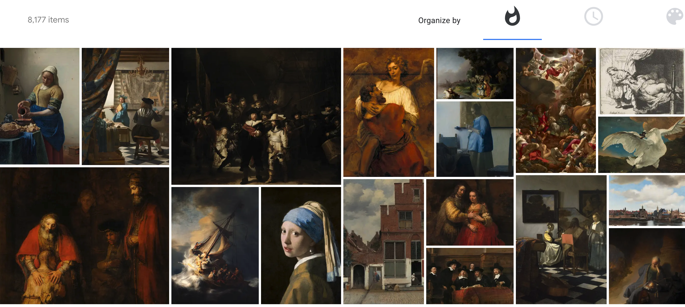

🌊 Art Movement - The way we interprete the world, the way we make images.
When we talked about an image, what are we looking at ?
-
Omitted (due to lack of collections):
- Romanesque art (8) / Byzantine art (8)/ Sienese School (131) / French Renaissance (40) / Spanish Renaissance (87) / Florentine painting (134) / Paduan school (140) / Milanese School (21) / School of Ferrara (26) / School of Fontainebleau (63) / School of Ferrara (26) / Sturm and Drang (110) / Pre-Raphaelite Brotherhood (142) / Hudson River School (372) / Nazarene movement (87) / Spanish Eclectism (21) / Folk art (83) / Primitivism (346) / Vienna Secession (196) / Nihonga (340) / Japonism (48) / Arts and Crafts movement (503) / Nazarene movement (87) / Geometric abstraction (169) / De Stijl (22) / Constructivism (157) / Metaphysical art (33) / American modernism (149) / Suprematism (42) / Shin-hanga (584) / Sōsaku-hanga (23) / Section d'Or (23) / Bauhaus style (108) / Pennsylvania Impressionism (3) / Die Brücke (51) / Art Deco (1920-1939) / Socialist realism (24) / Harlem Renaissance (110) / New Objectivity (120) ... (and many many more)
-
Gothic art (1150-1375) ✨

- pre- renaissance period
-
Renaissance (1300-1600) ✨

- the French word
Renaissancemeansrebirthand defines the period as one of cultural revival and renewed interest in classical antiquity. - Venetian Painting (1400-1500)
- 325 terms
- Italian Renaissance (1420-1600)
- 1860 terms
- The Renaissance began in Tuscany, and was centred in the city of Florence.
- Northern Renaissance (1430-1580)
- 4426 terms
- The adoption in northern Europe, mainly
Germanyand theNetherlands, of the artistic ideals of the Italian Renaissance. The prime mover was the German artist Albrecht Dürer (1471–1528) who travelled twice to Italy to discover the ‘secrets’ of the Italian masters, especially the mathematical principles of perspecitve and proportion.
- German Renaissance (1450)
- 1795 terms
- Term given to the art, and in particular the architecture (castle), created in the region along the River Weser and adjacent areas in Germany.
- High Renaissance (1490-1527)
- 510 terms
- A term which is generally taken to refer to art produced in Italy in the early decades of the 16th century when the careers of the great Renaissance masters, Leonardo da Vinci, Raphael, and Michelangelo overlapped.
-
Dutch and Flemish Renaissance painting (1500-1600) ✨

- Represents the 16th-century response to Italian Renaissance art in the Low Countries. Dutch and Flemish painters were also instrumental in establishing new subjects such as landscape painting and genre painting.
-
Antwerp school (1500-1700) ✨

- The city experienced an artistic renewal in the 17th century. The large workshops of Peter Paul Rubens and Jacob Jordaens, and the influence of Anthony van Dyck, made Antwerp the center of the Flemish Baroque.
-
Mannerism (1520-1580) ✨

- It is sometimes referred to as
late Renaissance, and the move away from High Renaissance classicism is already evident in the late works of Leonardo da Vinci and Raphael, and in the art of Michelangelo from the middle of his creative career. Although 16th-century artists took the formal vocabulary of the High Renaissance as their point of departure, they used it in ways that were diametrically opposed to the harmonious ideal it originally served.
-
Academic art (1560-1900)

- Academic art is the art and artists influenced by the standards of the French Académie des Beaux-Arts, which was practiced under the movements of Neoclassicism and Romanticism, and the art that followed these two movements in the attempt to synthesize both of their styles, and which is best reflected by the paintings of William-Adolphe Bouguereau, Thomas Couture, and Hans Makart.
-
Dutch Golden Age (1575-1675)
- 
- The Dutch Golden Age was a period in the history of the Netherlands, roughly spanning the 17th century, in which Dutch trade, science, military, and art were among the most acclaimed in the world.
-
Classicism (1590-1800) ✨

- Term referring to a web of ideas, attitudes and traditions derived from but not wholly dependent on a respect for and a close study of the literary and/or artistic activities of the ancient
GreeksandRomans. The aim of classicism, in all media, has been to construct an ideal vision and version of human experience that should inspire and instruct by its nobility, authority, rationality and truth (of which beauty may be considered a visible manifestation), and to provide convincing models for imitation.
-
Caravaggisti (1600-1650) ✨
- The Utrecht Caravaggisti painted predominantly history scenes and genre pieces. These are life-size paintings with economical and powerful compositions; the impact of the scene is heightened by contrasting areas of light and dark, and a small number of figures who are abruptly cropped so that they seem to be portrayed in close-up.
- Utrecht Caravaggism (1610-1630)
-
Baroque (1600-1725) ✨
- The principal European style in the visual arts in the 17th century and the first half of the 18th; generally considered to be characteristic of the period of Caravaggio, Rubens, Rembrandt, Giordano and Tiepolo in painting, Bernini in sculpture, and Borromini, Fischer von Erlach and Wren in architecture.
-
Ukiyo-e (1620-1912) ✨
- Japanese for ‘pictures of the floating world’ and referring to transient everyday life, it provided a major source of imagery in Japanese art from the 17th to the 19th centuries, particularly in the work of printmakers such as Hiroshige, Hokusai, and Utamaro. Typical subjects included theatre scenes, with actors in well-known roles, and views of the night-life of Edo (as Tokyo was then called). The resulting brightly coloured Woodcut prints were imported into Europe from the middle of the 19th century and had a great influence on many avant-garde artists, including the Impressionists and Post-Impressionists, who were particularly attracted by the bold compositions and striking colours of Ukiyo-e prints.
-
Rococo (1730) ✨

- A decorative style of the early to mid-18th century, primarily influencing the ornamental arts in Europe, especially in France, southern Germany and Austria. The character of its formal idiom is marked by asymmetry and naturalism, displaying in particular a fascination with shell-like and watery forms.
-
Neoclassicism (1750-1860) ✨
- The last stage of the classical tradition in architecture, sculpture, painting and the decorative arts. Neo-classicism was the successor to Rococo in the second half of the 18th century and was itself superseded by various historicist styles in the first half of the 19th century
-
Romanticism (1770-1850) ✨
- Though hard to define precisely, it essentially involves: 1) placing emotion and intuition before (or at least on an equal footing with) reason; 2) a belief that there are crucial areas of experience neglected by the rational mind; and 3) a belief in the general importance of the individual, the personal and the subjective. In fact it embodies a critique of that faith in progress and rationality that had characterized the main trend of Western thought and action since the Renaissance.
-
Naïve art (1800- )

- In the course of the 19th century in Europe, the arts and crafts of rural peoples (normally termed folk art, or sometimes ‘peasant art’) and the urban traditions of semi-skilled craftsmen gradually faltered in the face of growing industrialization.
-
Barbizon school (1830-1870) ✨
- The Barbizon painters have often been treated mainly as a transitional generation, helping to bridge the gap between classical landscape painting of the late 18th century and the early 19th and Impressionism. Romantic in their desire to break with conventions, their anti-urban sentiment and, above all, their lyrical appreciation of nature, they were Realist in their avoidance of the heroic, their preference for humble themes and sometimes in their technique.
-
Luminism (1850-1950)

- A style in 19th-century American painting characterized by the realistic rendering of light and atmosphere.
-
Hague School (1860-1890)
- The Hague school painters drew their inspiration from the flat polder landscape and the everyday lives of peasants and fishermen around The Hague and the nearby port of Scheveningen.
From Narrative to Abstract. Welcome to Modern world ! 🦄
-
Modern art (1860-1975)

- Modern art includes artistic work produced during the period extending roughly from the
1860s to the 1970s, and denotes the styles and philosophy of the art produced during that era. The term is usually associated with art in which the traditions of the past have been thrown aside in aspirit of experimentation. Modern artists experimented with new ways of seeing and with fresh ideas about thenature of materialsandfunctions of art. A tendency away from thenarrative, which wascharacteristic for the traditional arts, towardabstractionis characteristic of much modern art. More recent artistic production is often called contemporary art or postmodern art. - Modern art begins with the heritage of painters like Vincent van Gogh, Paul Cézanne, Paul Gauguin, Georges Seurat and Henri de Toulouse-Lautrec all of whom were essential for the development of modern art.
-
Impressionism (1860)

- The primary use of the term Impressionist is for a group of
Frenchpainters who worked between around 1860 and 1900, especially to describe their works of the later 1860s to mid-1880s. These artists include Frédéric Bazille, Paul Cézanne, Edgar Degas, Edouard Manet, Claude Monet, Berthe Morisot, Camille Pissarro, Auguste Renoir and Alfred Sisley, as well as Mary Cassatt, Gustave Caillebotte (who was also an important early collector), Eva Gonzalès, Armand Guillaumin and Stanislas Lépine.
-
Aestheticism (1868-1900)
- Aestheticism flourished in England from the 1870s to the 1890s, its principal theorists being Walter Pater, in the conclusion to The Renaissance (1873), and Oscar Wilde. The foremost practitioners in painting were Whistler and Albert Moore.
-
Modernism (1875-1960)

- The invention and the effective pursuit of artistic strategies that seek not just close but essential connections to the powerful forces of social modernity. Despite being intermittent in their occurrence and unsystematic in nature, these strategies have been most effective in Europe and its colonies from the mid-19th century and in the USA from the early 20th, moving from the margins to the centre of visual cultures, from reactive radicality to institutionalized normality.
-
American Renaissance (1876-1917)
- Characterized by renewed national self-confidence and a feeling that the United States was the heir to Greek democracy, Roman law, and Renaissance humanism. The era spans the period between the Centennial Exposition and the United States' entry into World War I.
-
American Impressionism (1880-1900)
- American artists such as Theodore Robinson, Julian Alden Weir, Childe Hassam and John H. Twachtman presented subjects in bright sunlight and used flecked brushwork and intense colour, but frequently retained a more conservative approach to composition and the representation of figures than their French counterparts.
-
Tonalism (1880-1915)
- Style of American painting that appeared between c. 1880 and 1920, defined by evocative atmospheric effects and a limited palette of soft, mostly dark colours. Its primary influences were French Barbizon school ideas as adopted by George Inness and William Morris Hunt, and the aesthetic movement, as embodied by James McNeill Whistler. The style is characterized by soft, diffused light, muted tones, and hazily outlined objects, all of which imbue the works with a strong sense of mood. The term was applied especially to landscape painting in which nature is presented as serene or mysterious, never disquieting or dramatic.
-
Amsterdam Impressionism (1885-1930)

- Like their French colleagues, these Amsterdam painters put their impressions onto canvas with rapid, visible strokes of the brush. They focused on depicting the everyday life of the city.
-
Post-Impressionism (1886-1905)

- Post-Impressionism can be loosely defined as a rejection of the Impressionists’ concern for the naturalistic depiction of light and colour in favour of an emphasis on abstract qualities or symbolic content. It therefore includes neo-impressionism, symbolism, Cloisonnism, synthetism, and the later work of some Impressionists.
- Neo-impressionism (1880-1890)
-
Les Nabis (1888-1896)

- Les Nabis were a group of Post-Impressionist avant-garde artists who set the pace for fine arts and graphic arts in France in the 1890s.
-
Synthetism (1888-1896)

- Style of painting that developed out of Cloisonnism and formed a current within Symbolism. It was practised by Paul Gauguin and his circle in the late 1880s and early 1890s. The term derives from the French verb synthétiser (to synthesize) and is based on the idea that art should be a synthesis of three features: the outward appearance of natural forms, the artist’s feelings about his subject, and purely aesthetic considerations of line, colour, and form.
- Although realistic, tangible subjects served as their starting-point, the artists
distortedthese images in order to express more clearly certain moods or interpretations.
-
Art Nouveau (1890-1914)

- Its chief manifestations were in architecture and the decorative and graphic arts. It is characterized by sinuous, asymmetrical lines based on organic forms; in a broader sense it encompasses the geometrical and more abstract patterns and rhythms that were evolved as part of the general reaction to 19th-century historicism.
-
School of Paris (1890-1940)

- Referring to the non-French artists who had settled and worked in Paris for some years, many of whom lived either in Montmartre or Montparnasse, and who included a number of artists of Eastern European or Jewish origin.
-
Ashcan School (1891-1918) 垃圾箱画派???
- Term first used by Holger Cahill and Alfred Barr in Art in America (New York, 1934) and loosely applied to American urban realist painters. In particular it referred to those members of The Eight who shortly after 1900 began to portray ordinary aspects of city life in their paintings.
-
Heidelberg School (1891)

- Group of artists active in the late 19th century in Heidelberg, a suburb of Melbourne, who introduced plein-air Impressionism to Australia.
-
American Realism (1900-1930)
-
Cubism (1907-1921)

- Although the term is not specifically applied to a style of architecture except in former Czechoslovakia, architects did share painters’ formal concerns regarding the conventions of representation and the
dissolution of three-dimensional form. Cubism cannot definitively be called either a style, the art of a specific group or even a movement. It embraces widely disparate work; it applies to artists in different milieux; and it produced no agreed manifesto. Yet, despite the difficulties of definition, it has been called the first and the most influential of all movements in 20th-century art.
-
Futurism (1909-1914)

- The new ideology of Futurism set itself with violent enthusiasm against the weighty inheritance of an art tied to the Italian cultural tradition and exalted the idea of an aesthetic generated by the modern myth of the machine and of speed.
-
Expressionism (1912)

- Although in part an artistic reaction both to academic art and to Impressionism, the movement should be understood as a form of
‘new Humanism’, which sought to communicate man’s spiritual life. It reflected the deep intellectual unrest c. 1900, reflected in contemporary literary sources, about the destruction of the traditional relationship of trust between man and the world. - German Expressionism (1905-1940)
-
Dada (1916-1922)

- Artistic and literary movement launched in Zurich in 1916 but shared by independent groups in New York, Berlin, Paris, and elsewhere. The Dadaists channelled their revulsion at World War I into an indictment of the nationalist and materialist values that had brought it about. They were united not by a common style but by a rejection of conventions in art and thought, seeking through their unorthodox techniques, performances, and provocations to shock society into self-awareness.
-
Fauvism (1905-1908)

- Movement in French painting from c. 1898 to 1906 characterized by a violence of colours, often applied unmixed from commercially produced tubes of paint in broad flat areas, by a spontaneity and even roughness of execution and by a bold sense of surface design.
-
Der Blaue Reiter (1911-1914)

- ‘None of us seeks to reproduce nature directly…We are seeking to give artistic form to inner nature, i.e. spiritual experience.’ With its bright colours and often semi-abstract images inspired by a wide variety of sources, the Blaue Reiter was perhaps the most lyrical of the expressionist movements of the early 20th century.
-
Surrealism (1920)

- The Surrealists perceived a deep crisis in Western culture and responded with a revision of values at every level, inspired by the psychoanalytical discoveries of
Freudand the political ideology ofMarxism. In both poetry and the visual arts this revision was undertaken through the development ofunconventional techniques, of which Automatism was paramount.
-
Magical Realism (1920-1960)

- Style of painting popular in Europe and the USA mainly from the 1920s to 1940s, with some followers in the 1950s. It occupies a position between Surrealism and Photorealism, whereby the subject is rendered with a photographic naturalism, but where the use of flat tones, ambiguous perspectives, and strange juxtapositions suggest an imagined or dreamed reality.
-
Social realism (1934)
- Term used to refer to the work of painters, printmakers, photographers and film makers who draw attention to the everyday conditions of the working classes and the poor, and who are critical of the social structures that maintain these conditions.
-
Regionalism (1925-1945)

- Movement in American art that focused on local, representational subject-matter. Regionalism was the dominant style in American art during the 1930s and into the 1940s, often depicting scenes of the rural Midwest, American folklore, or the hard times during the Great Depression. Regionalism can be viewed as an artist’s desire to connect with his or her surroundings rather than to universal themes (as was often the case with abstraction).
-
Public art (1930-)

- New public art forms emerged, seen in digital and internet media, pop-up shops, and temporary open-access studios, street performance, and urban activism, as well as architectural collaborations in landscape, environment or urban design.
-
Pop art (1950)
- Hamilton defined Pop in 1957 as: ‘Popular (designed for a mass audience); Transient (short term solution); Expendable (easily forgotten); Low Cost; Mass Produced; Young (aimed at Youth); Witty; Sexy; Gimmicky; Glamorous; and Big Business’.
- Hamilton set out, in paintings such as $he (1958–61; London, Tate), to explore the hidden connotations of imagery taken directly from advertising and popular culture, making reference in the same work to pin-ups and domestic appliances as a means of commenting on the covert eroticism of much advertising presentation.
-
Abstract expresionsim (1946)
- They range from Barnett Newman’’s unbroken fields of colour to Willem de Kooning’s violent handling of the figure. They were linked by a concern with varying degrees of abstraction used to convey strong emotional or expressive content.
- Color field (1948-1968)
-
Street art (1970)

- Slogans of protest and political or social commentary graffitied onto public walls are the precursor to modern graffiti and street art, and continue as one aspect of the genre.


Finally... now is
Contemporaray art!
- Contemporary art (1980-)
- Contemporary art is the art of today, produced in the second half of the 20th century or in the 21st century. Contemporary artists work in a globally influenced, culturally diverse, and technologically advancing world. Their art is a dynamic combination of materials, methods, concepts, and subjects that continue the challenging of boundaries that was already well underway in the 20th century. Diverse and eclectic, contemporary art as a whole is distinguished by the very lack of a uniform, organising principle, ideology, or "-ism".